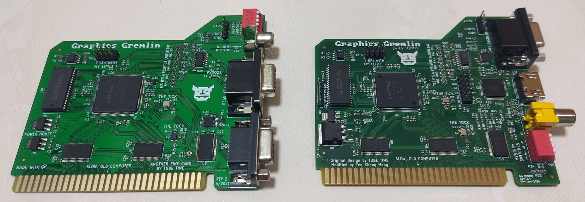
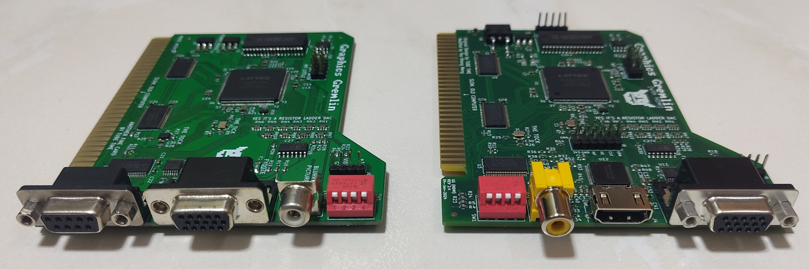
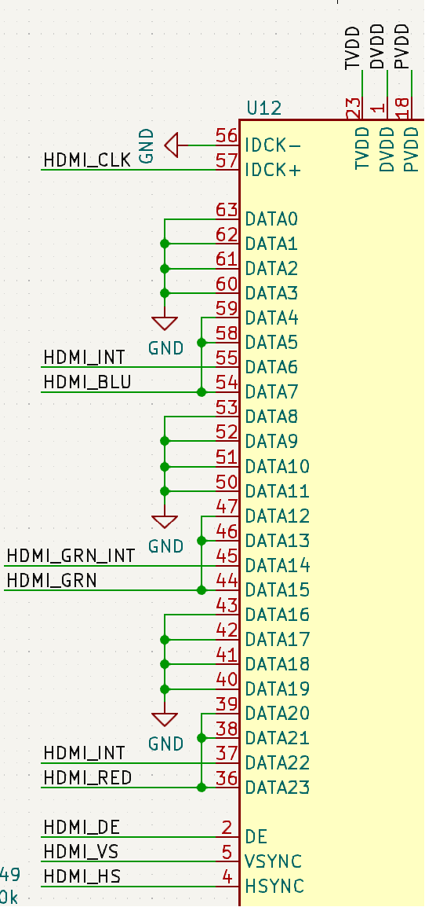
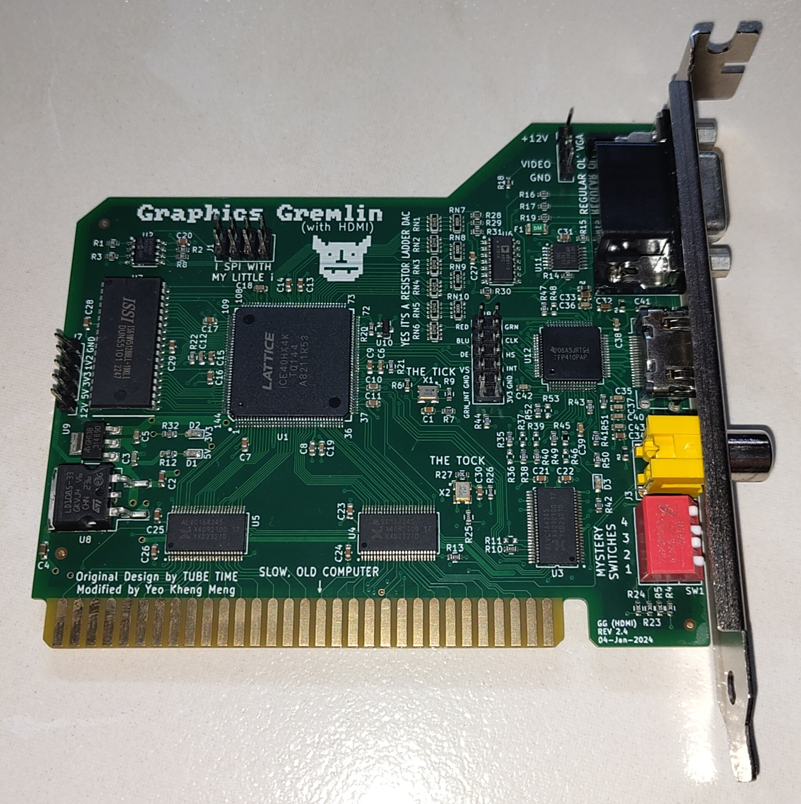
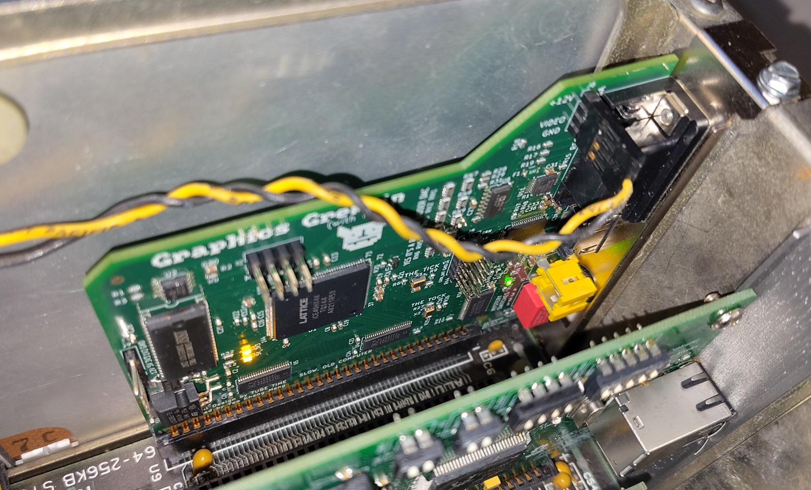
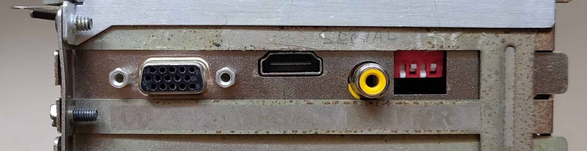

HDMI is a relatively modern video connector we take for granted on modern PCs and monitors. Now vintage PCs can join in the fun too with a native connection to modern HDMI monitors without any additional adapter.
Background
2 years ago, I learned of an open-source project called Graphics Gremlin (GG) by Eric Schlaepfer who runs the website Tubetime.us. It is an 8-bit ISA graphics card that supports display standards like Color Graphics Adapter (CGA) and Monochrome Display Adapter (MDA). CGA and MDA are display standards used by older IBM(-compatible) PCs in the 1980s.
The frequencies and connectors used by CGA and MDA are no longer supported by modern monitors hence it is difficult for older PCs of the 1980s era to have modern displays connected to them without external adapters. GG addresses this problem by using techniques like scan doubling (for CGA) and increasing the vertical refresh rate (for MDA) then outputing to a relatively newer but still old VGA port.
I fabricated and assembled the design then installed it into my IBM5155.
GG provides outputs in VGA, Composite and DE9 RGBI.
However 2 issues bugged me about this card:
-
The Composite video and VGA port cannot be used at the same time due to pin sharing between both ports. Switching between them is possible by flipping physical switches on the card. However on my IBM5155, the internal CRT monitor runs on Composite hence if I want to use an external monitor, the internal CRT becomes unusable.
-
Modern monitors have long started to omit the analog VGA inputs in favour of modern digital ports like HDMI or Displayport. This requires a VGA-to-HDMI adapter. This analog-to-digital conversion will also lead to an inevitable loss in video quality. Such adapters also require an external power source such as USB. Vintage PCs usually don’t have USB outputs so supplying power with an additional USB power adapter leads to more setup hassles.
I decided to modify the GG design so it can connect natively to an external HDMI monitor and service the internal Composite-based CRT at the same time.
How does the Graphics Gremlin work?
The core of the GG is the Lattice iCE40HX4K FPGA. It is responsible for handling instructions from the ISA bus and generating the appropriate video signals.
512KiB video RAM is provided by ISSI IS61WV5128BLL. 3 bitstreams are stored in a 8Mbit Microchip SST26VF080A SPI flash. These bitstreams are:
- MDA output using a VGA compatible 70Hz refresh rate
- MDA output to RGBI port at 50Hz refresh rate (incompatible with VGA monitors)
- CGA output. RGBI connector will output at 640x200 60Hz while VGA will be scan doubled to 640x400 60Hz.
RGBI output is driven directly from the FPGA since it is just a TTL signal. Analog VGA signal is generated using a DAC resistor ladder. Composite is driven from the green VGA pin hence why Composite and VGA cannot be used at the same time.
The code is written in Verilog HDL and uses the open source Project Icestorm toolchain.
One interesting thing that the GG design has is it will display a blinking test pattern if it is powered on but the host PC has yet to command it to display anything.
The left is the test pattern for CGA and the right is MDA.
This test pattern proved very useful for me as it means I don’t need the card to be plugged into a PC while I’m testing any code changes.
My Modifications
Summary
Left is the original GG, right is my modified design.
View from the ports side.
This is the demo video using the updated GG card in my IBM5155 outputing HDMI to my 5:4 Dell P1917S monitor and Composite to my small LCD monitor.
This video shows the bootup process from a cold start to the DOS 6.22 command line. After that I run CGA Compatibility tester to check the output.
The entire updated PCB design and Verilog code has been open-sourced here: https://github.com/yeokm1/graphics-gremlin-hdmi
Here is a summary of changes I made some which I will cover further down this post.
- Hardware changes
- Added HDMI port by removing the RGBI DE9 port. Port positions adjusted to ease trace routing.
- Added TI TFP410 DVI transmitter (HDMI is compatible with DVI). HDMI is independent of the VGA/Composite output.
- Test points for inputs to DVI transmitter.
- Replaced the 3.3VDC 1A linear regulator with 3A as TFP410 is power hungry at up to 1A.
- Added pin headers for power.
- Added LED power indicators for 5V and 3.3V.
- 2-layer -> 4-layer board to ease routing.
- HDL code changes
- Selectable MDA colours (HDMI only)
- Removed normal MDA bitstream as there is no more RGBI port.
- Added CGA 70Hz mode.
- Added CGA 60Hz overscan mode for demo and debug purposes.
- Modified Scandoubler code to support Display Enable signal as required by DVI chip but not VGA.
Famous Demos
I ran 2 famous demos 8088MPH and Area 5150 that specifically targets the original IBM PC and CGA cards. Several problems were encountered that could be inherent to the original Graphics Gremlin or the configuration of my system.
This 8088MPH demo stresses out both actual systems and emulators alike. There are points which the graphics card seems to have issues.
- 02:14 - Shimmering
- 03:14 - Unsupported frequency on HDMI
- 04:15 - Shimmering
- 04:51 - No HDMI display
- 05:53 - Constant high-pitch sound that ends at 06:25
- 06:41 - Unsupported frequency on HDMI
For the Area 5150 demo, the graphics card has been set into a mode to specifically display the overscan area since Area 5150 uses this.
Showing the overscan section should not be normally done as it leads to non-standard resolutions and weird display signaling so many monitors run into problems receiving this input. My 4K monitor happens to be one of the few to at least make an attempt to display this.
There are many display errors in this Area 5150 demo that could be aggravated by the force display of overscan.
Hardware changes
HDMI support through DVI transmitter IC
HDMI (and DVI) use Transition-Minimized Differential Signaling (TMDS) lines. The ICE40 FPGA however does not have that. Online searches garnered that some people have used workarounds to generate the differential signals however I’m not sure how compatible or spec-compliant those are.
I decided to go for more reliable option by using a dedicated DVI transmitter TI TFP410. I referred to an open-source PMOD schematic from Black Mesa Labs to integrate this chip into the Graphics Gremlin.
The TFP410 accepts a 24-bit RGB colour data input. Ideally, we should connect all 24 pins to the FPGA directly but there are not many spare pins left in the ICE40HX. The only FPGA pins available are those meant for the external RGBI port which I dropped. These pins include the 4 colour signals, red, green, blue and intensity are thus repurposed to talk to the TFP410.
To simulate an RGBI monitor, the 3 base colour signals are connected to the MSB and some pins of the colour input with the intensity bit shared among all as the second-most significant bit. Green gets a dedicated intensity control pin in order to produce a special brown colour required of the CGA standard. More details in the brown section below.
The TFP410 will also handle the appropriate 8b/10b encoding to ensure a proper TMDS data signal for DVI. Since a HDMI connector is electrically similar to DVI, the DVI transmitter output can be directly wired to the HDMI port.
Test points
Various test points were added to the board. The data inputs from the FPGA to the TFP410 are as follows:
- Red, Green, Blue, Intensity, Green Intensity
- Horizontal Sync (HS)
- Vertical Sync (VS)
- Display Enable (DE)
- Clock (CLK)
These inputs with 3.3V and GND are broken out as standard 2.54mm pin headers in a similar style to a PMOD.
I also added power LEDs and pin headers to the left of the board so I can monitor power state and power the board without having to connect to an actual vintage machine with ISA bus and displaying something.
HDL code changes
Supporting the DVI transmitter chip
The Verilog code has to be modified to send data in an appropriate format to the DVI chip.
Most of the original RGBI lines meant for the DE9 monitor connector, RGBI, HS, VS lines are similar. However the CLK and DE lines are not used before and hence has to be provided. CLK was relatively easy to get and wire out to the DVI chip. However DE was slightly more problematic.
In the original IBM CGA/MDA graphics card, there exists a chip called a Motorola 6845 which generates the Cathode Ray Tube (CRT) control signals. It is also known as a CRTC6845 and the DE line is also generated here.
In the code, the behaviour of this chip is emulated in crtc6845.v. The DE line output of this module has to be pulled out and wired to the DVI chip.
In CGA mode, the code contains a cga_scandoubler.v to double the number of horizontal lines and frequency to change the number of viewable vertical lines from 640x200 to 640x400 to make it more compatible for modern displays. It does this by doing double buffering with 2 arrays. One array is read out twice for each line using twice the usual pixel clock while the other array is being written to by the host PC then both arrays are swapped at the end of line.
I modified this Scandoubler to cache the DE bit as well.
Special handling for brown colour
The PCB and code treats the palette value “I:0 R:1 G:1 B:0” specially to produce a brown instead of dark yellow as per the CGA standard.
When an IBM5153 Colour Display Monitor sees this signal “I:0 R:1 G:1 B:0”, instead of displaying dark yellow, the green component is halved producing a brown colour.
In order to emulate this behaviour for modern displays, the FPGA itself will have to halve the green colour component. This is done through the dedicated green intensity control pin to the DVI transmitter.
// video[1] is the original green value
assign hdmi_grn = video[1] ^ (hdmi_red & video[1] & (hdmi_blu ^ 1) & (hdmi_int ^ 1));
assign hdmi_grn_int = hdmi_int ^ (hdmi_red & video[1] & (hdmi_blu ^ 1) & (hdmi_int ^ 1));
The above boolean logic can lower the green value for this specific palette value by driving the hdmi_green_int pin high and green pin low. This logic is provided by @spbnick.
My IBM 5155 running the CGA Compatibility Tester displaying the colour palatte.
Selectable MDA colours for HDMI
In the original GG, the MDA output is a constant amber (see photo in an earlier section). I didn’t particularly like amber. I wanted to have a customisable colour option depending on my needs. Since 2 of the physical switches are unused in MDA mode, I programmed the ability to change the colours depending on what switch is selected.
Depending on switch state, colours like green, yellow, white and red are selectable on-the-fly.
These colours are applicable for the HDMI section only.
Additional CGA 70Hz mode
According to page 18 of the DVI 1.0 specification, the minimum acceptable for DVI is a pixel clock of 25.175Mhz for 640x480 60Hz.
Even after scandoubling, the current resolution of 640x400 60Hz is technically below the minimum acceptable. I have tested with the monitors I have up to a modern Dell S2721QS 4K monitor and Sony 43" 4K TV and all can accept 640x400 60Hz with no problems.
Nevertheless to adhere to the specification, I decided to provide another selectable CGA bitstream to drive the pixel clock higher so as to produce 640x400 at 70Hz in case some displays cannot accept a lower pixel clock.
At this mode though, the IBM5155 internal CRT and external composite display will no longer work.
Additional CGA 60Hz overscan mode
I was informed that certain demos like Area 5150 use the overscan area. Overscan area is supposed to be a non-viewable region between the expected viewable area and horizontal/vertical sync. Usually it’s black to act as a buffer to be discarded as CRT screens have some variability on how their display area is positioned.
In the original implementation, the DE signal is generated from crtc6845.v and is set low outside the display area. This is the same DE signal that is sent to the DVI transmitter.
I investigated to see whether it was possible to allow the overscan region to be shown by allowing a secondary DE output in crtc6845.v to encroach into the overscan area.
In the above screenshot, the overscan portion are the green sections on the right and bottom.
In my testing though, the display of image data this close to the Hsync and Vsync may not be tolerable to all monitors. I had to use my Dell S2721QS 4K monitor in this demo as the previous 5:4 Dell P1917S monitor does not seem to like this signal.
This overscan display is now provided as a fourth bitstream.
Development tools
During the design process, I used several tools to help me.
As I would find out, if one sends an improper display signal to the monitor, most monitors will tell you the signal is out of specification and not elaborate more otherwise nothing is shown at all.
This makes it extremely difficult to troubleshoot what went wrong.
Digilent Digital Discovery
The Digilent Digital Discovery (DDD) is a relatively low-cost USB logic analyzer for the specifications/features.
It can sample up to 800 MS/s depending on the number of channels active at one time. Compared to most osilloscopes, it has 2 GBit of RAM which allows me to store plenty of samples. This is especially required given the data samples I was working with and I need to capture at least several frames.
This is a sample capture of the Clock, Display Enable, Vertical Sync and Horizontal Sync signals on the Digilent Waveforms software.
Testing with Mimas A7 (Xilinx Artix 7)
As part of my testing, I also made a small FPGA test project using another FPGA board Mimas A7 based on the Xilinx Artix 7.
The FPGA test board reads the raw signals that are given to the DVI transmitter and displays the output using its own HDMI output. Visualising the signals makes it easier to literally see and troubleshoot what the problem could be instead of just looking at the raw logic levels from the logic analyser output.
The code is heavily based on the HDMI_FPGA project by Dominic Meads and runs on Vivado 2023.
486 PC
Instead of going to my precious IBM5155 directly, I used my 486 PC for intermediate testing.
The BIOS of my 486 motherboard has the ability to change to the different CGA and MDA modes on top of its more period correct VGA mode. This helped me in my testing as I can more easily switch between the video modes compared to my IBM5155 which uses physical switch settings.
Install in my IBM5155
After I was more confident on the card’s functionality, final tests were done in my IBM5155.
The card installed in the slot closest to the CRT monitor with the internal composite cable connected.
The rear of my IBM5155 shows the HDMI connector, probably the first to have one?
I didn’t design a new card bracket so I used a twist tie to secure the card to the enclosure.
Conclusion
This project was a long journey for me since I started working on this project in Aug 2021. At that time, I designed the PCB without the skills to code in Verilog. Even though the number of changes I made are small, it took me quite a bit of time on the side to finally pick up the skills to work on my first FPGA project with all development and testing work this project entails.
Not forgetting I’m actually standing on the shoulders of giants like Eric Schlaepfer who designed the original Graphics Gremlin. I’m just building on a small increment on top of his work.
Embedded below is the presentation I gave at Hackware v7.9 meetup.


{kind=link}
{kind=link}
{kind=link}
{kind=link}
{kind=link}
{kind=link}
{kind=link}
{kind=link}
{kind=link}
{kind=link}
{kind=link}
{kind=link}
{kind=link}
{kind=link}
{kind=link}
{kind=link}
{kind=link}